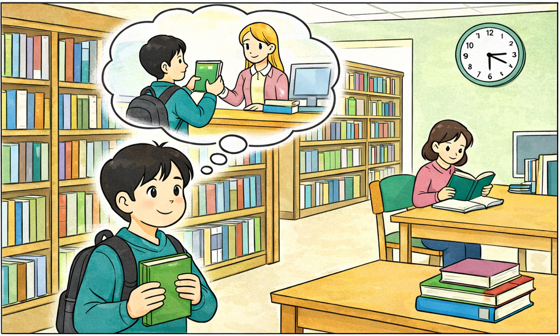

Many students go to the library after school.
They read books and do their homework there.
The library is quiet and comfortable,
so it is a good place to study.

Studying at the Library
Many students go to the library after school.
They read books and do their homework there.
The library is quiet and comfortable,
so it is a good place to study.
Questions
Q1 What do many students do in the library?
Q2 What is the girl doing?
Q3 What color is the boy's backpack?
Q4 Which do you like better, reading books or watching TV?
Q5 Do you like going to the mountains?
Yes, I do. → Please tell me more.
No, I don't. → Why not?